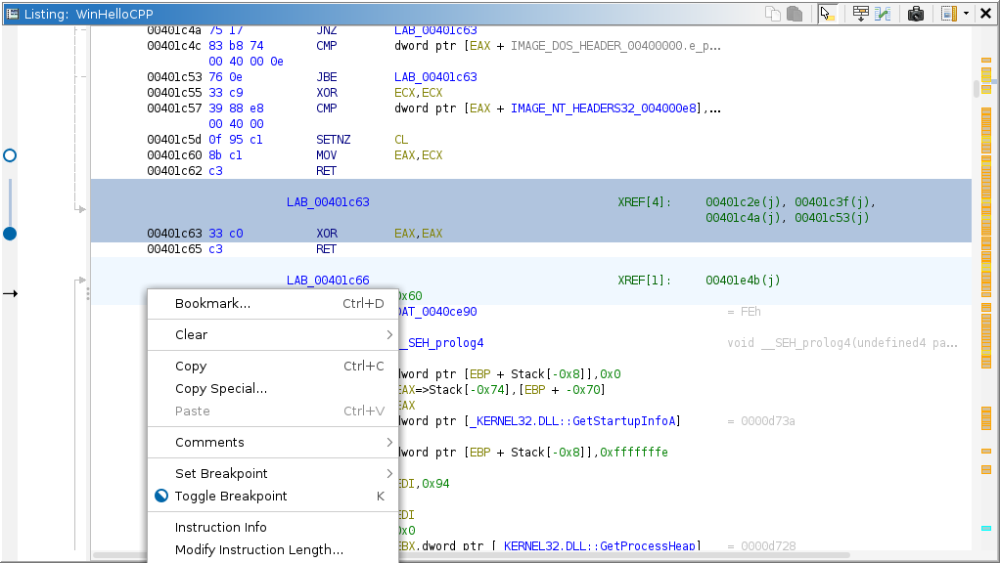

Toggle
Breakpoint (K)
Toggle
Breakpoint (K)|  |
For a description of how breakpoints are managed logically in Ghidra, please read about the Breakpoints window. Each individual breakpoint location is placed in its respective listing. Breakpoints are best controlled using the static program listing, where they are stored as bookmarks. When this plugin is active, additional actions are available for managing breakpoints and their locations on target. The actions in the static listing manipulate the logical breakpoint as a whole; whereas, the actions in the dynamic listing tend to manipulate just the locations for the current target. NOTE: Depending on the connected debugger, locations resulting from a common specification may not be independently manipulated.
The following actions are added to all disassembly listings by the breakpoint marker plugin. They allow the placement and toggling of breakpoints by address, kind, and length. To set breakpoints on arbitrary expressions, use the Set Breakpoint action of the Objects window. NOTE: These actions may also appear in other address-based contexts, e.g., the decompiler listing; however, those contexts often lack any indication of breakpoint presence or state.
Toggle
Breakpoint (K)This action is always available, and it is suitable for almost all cases. If there is a breakpoint at the cursor, this simply toggles its state. If there is no breakpoint at the cursor, this will behave like Set Breakpoint, giving a reasonable set of default parameters based on the context at the cursor. At an instruction, it will prefer to set a Software Execution breakpoint. At defined data, it will prefer to set a Read/Write breakpoint of the size of data. At undefined data, or if the target does not support the suggested default, the default kind is left unselected. Please use one of the Set Breakpoint actions to force specific commands. NOTE: The default parameters are not guaranteed to be accepted by the connected debugger.
 Set
Breakpoint
Set
BreakpointThis menu is available on the dynamic listing when the target supports at least one breakpoint kind. This menu is always available on the static listing. It displays set breakpoint actions for each reasonable combination of kinds supported by the target. In the static listing, all reasonable combinations are available, regardless of target support; however, only those kinds supported by the target will be included in the resulting command. NOTE: Breakpoints in the static listing can only be mapped to targets which are recorded into a trace. Selecting one of the actions will display a prompt allowing adjustments to the parameters before issuing the command.
 |
Enable
BreakpointThis action is available when there is at least one disabled breakpoint at the cursor. It enables those logical breakpoints.
 Disable
Breakpoint
Disable
BreakpointThis action is available when there is at least one enabled breakpoint at the cursor. It disables those logical breakpoints.
This action is available when there is at least one breakpoint (in any state) at the cursor. It deletes those logical breakpoints.
The background coloring of enabled and disabled, effective and ineffective breakpoints can be configured in the tool's options. By default, enabled breakpoints are colored a desaturated blue, ineffective breakpoints are colored grey, and disabled breakpoints have no background at all.